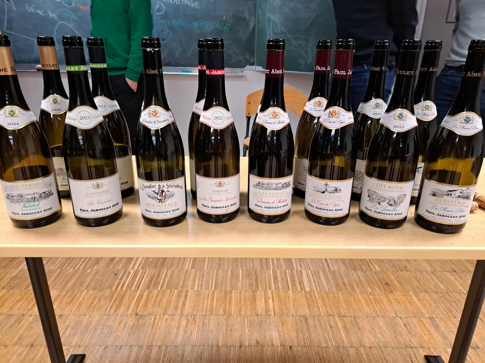
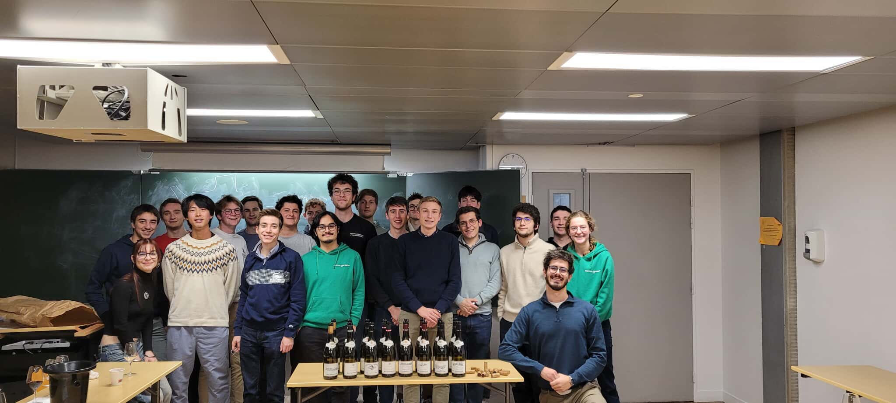

Décembre 2025
Domaine Paul Jaboulet Aîné
Pour cette dégustation d'exception, nous avons eu le plaisir d'accueillir Julien Nosenzo, représentant du Domaine Paul Jaboulet Aîné.
Cette soirée nous a permis de découvrir la richesse et la diversité des vins de la Vallée du Rhône septentrionale. Julien Nosenzo a partagé avec nous sa passion pour ces terroirs emblématiques, leur histoire, et la philosophie du domaine qui allie tradition et innovation pour produire des vins d'exception.

